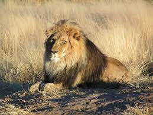

Float Practice
 Cats are believed to be the only mammals who don't taste sweetness. Cats are nearsighted, but their peripheral vision and night vision are much better than that of humans. Cats are supposed to have 18 toes (five toes on each front paw; four toes on each back paw). Cats can jump up to six times their length.
Cats are believed to be the only mammals who don't taste sweetness. Cats are nearsighted, but their peripheral vision and night vision are much better than that of humans. Cats are supposed to have 18 toes (five toes on each front paw; four toes on each back paw). Cats can jump up to six times their length.
 Dogs can smell thousands of times better than humans. Their noses have millions more scent receptors—for example, a human nose averages five million, while a Dachshund's nose has 125 million—making dogs useful for sniffing out drugs, dead bodies, bed bugs, explosives, and other things dogs can smell that humans can't.
Dogs can smell thousands of times better than humans. Their noses have millions more scent receptors—for example, a human nose averages five million, while a Dachshund's nose has 125 million—making dogs useful for sniffing out drugs, dead bodies, bed bugs, explosives, and other things dogs can smell that humans can't.
 Lions are the only known cat species where individuals roar together - with even young cubs joining in with their mews.
 Some use their prehensile tails to hold objects and tree branches. Monkeys from the old world have non-grasping and much shorter tails. The longest tail belongs to the female spider monkey. With a body length of about 2 feet long, these species can have a tail of 3 feet in length.
Some use their prehensile tails to hold objects and tree branches. Monkeys from the old world have non-grasping and much shorter tails. The longest tail belongs to the female spider monkey. With a body length of about 2 feet long, these species can have a tail of 3 feet in length.
 They're bigger, stronger, and heavier than all other cats (including lions). Plus, they really do live in the jungle — in Asia, to be exact. One tiger can weigh as much as 300 kilograms and can grow as long as 2.8 metres (as long as a small car).
They're bigger, stronger, and heavier than all other cats (including lions). Plus, they really do live in the jungle — in Asia, to be exact. One tiger can weigh as much as 300 kilograms and can grow as long as 2.8 metres (as long as a small car).